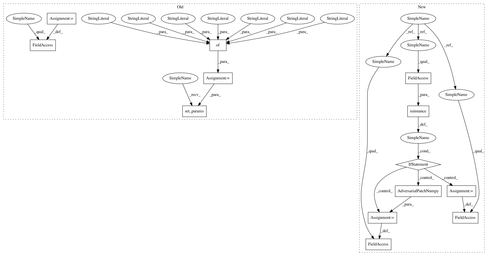

c9949c1bf26f2a18de24176bb5ce9778834bcdd2,art/attacks/evasion/adversarial_patch/adversarial_patch.py,AdversarialPatch,__init__,#AdversarialPatch#Any#Any#Any#Any#Any#Any#Any#Any#Any#,55
Before Change
if not isinstance(classifier, ClassifierNeuralNetwork) or not isinstance(classifier, ClassifierGradients):
raise ClassifierError(self.__class__, [ClassifierNeuralNetwork, ClassifierGradients], classifier)
kwargs = {
"target": target,
"rotation_max": rotation_max,
"scale_min": scale_min,
"scale_max": scale_max,
"learning_rate": learning_rate,
"max_iter": max_iter,
"batch_size": batch_size,
"clip_patch": clip_patch,
}
self.set_params(**kwargs)
self.patch = None
def generate(self, x, y=None, **kwargs):
Generate adversarial samples and return them in an array.
After Change
]
def __init__(
self,
classifier,
target=0,
rotation_max=22.5,
scale_min=0.1,
scale_max=1.0,
learning_rate=5.0,
max_iter=500,
clip_patch=None,
batch_size=16,
):
Create an instance of the :class:`.AdversarialPatch`.
:param classifier: A trained classifier.
:type classifier: :class:`.Classifier`
:param target: The target label for the created patch.
:type target: `int`
:param rotation_max: The maximum rotation applied to random patches. The value is expected to be in the
range `[0, 180]`.
:type rotation_max: `float`
:param scale_min: The minimum scaling applied to random patches. The value should be in the range `[0, 1]`,
but less than `scale_max`.
:type scale_min: `float`
:param scale_max: The maximum scaling applied to random patches. The value should be in the range `[0, 1]`, but
larger than `scale_min.`
:type scale_max: `float`
:param learning_rate: The learning rate of the optimization.
:type learning_rate: `float`
:param max_iter: The number of optimization steps.
:type max_iter: `int`
:param clip_patch: The minimum and maximum values for each channel
:type clip_patch: [(float, float), (float, float), (float, float)]
:param batch_size: The size of the training batch.
:type batch_size: `int`
super(AdversarialPatch, self).__init__(classifier=classifier)
if not isinstance(classifier, ClassifierNeuralNetwork) or not isinstance(classifier, ClassifierGradients):
raise ClassifierError(self.__class__, [ClassifierNeuralNetwork, ClassifierGradients], classifier)
if isinstance(self.classifier, TensorFlowV2Classifier):
self._attack = AdversarialPatchTensorFlow(classifier=classifier, target=target, rotation_max=rotation_max,
scale_min=scale_min, scale_max=scale_max,
learning_rate=learning_rate, max_iter=max_iter,
clip_patch=clip_patch, batch_size=batch_size)
else:
self._attack = AdversarialPatchNumpy(classifier=classifier, target=target, rotation_max=rotation_max,
scale_min=scale_min, scale_max=scale_max, learning_rate=learning_rate,
max_iter=max_iter, clip_patch=clip_patch, batch_size=batch_size)
def generate(self, x, y=None, **kwargs):
Generate adversarial samples and return them in an array.
In pattern: SUPERPATTERN
Frequency: 3
Non-data size: 13
Instances
Project Name: IBM/adversarial-robustness-toolbox
Commit Name: c9949c1bf26f2a18de24176bb5ce9778834bcdd2
Time: 2020-03-20
Author: beat.buesser@ie.ibm.com
File Name: art/attacks/evasion/adversarial_patch/adversarial_patch.py
Class Name: AdversarialPatch
Method Name: __init__
Project Name: IBM/adversarial-robustness-toolbox
Commit Name: 0822118b414e74037e251002d9c870a03d33190e
Time: 2020-03-30
Author: beat.buesser@ie.ibm.com
File Name: art/attacks/evasion/adversarial_patch/adversarial_patch_numpy.py
Class Name: AdversarialPatchNumpy
Method Name: __init__
Project Name: IBM/adversarial-robustness-toolbox
Commit Name: 573314f4b6377764d40f9514cd89f835bf191ee4
Time: 2020-03-30
Author: beat.buesser@ie.ibm.com
File Name: art/attacks/evasion/adversarial_patch/adversarial_patch_numpy.py
Class Name: AdversarialPatchNumpy
Method Name: __init__